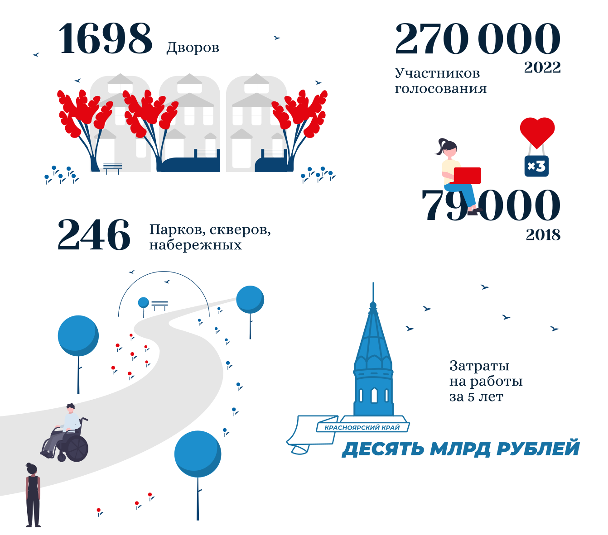

Пять лет назад Красноярский край активно включился в федеральный проект «Формирование комфортной городской среды».
За эти годы программа значительно расширилась: если раньше в ней участвовало всего 17 городов, то сейчас — 27 городов и городских поселений с населением более 10 тыс. человек.
География участников охватывает весь край — от Норильска и Дудинки до Минусинска и Шушенского.
«Формирование комфортной городской среды»
Красноярский край

Семья, стабильная работа, безопасная и комфортная среда — это те вещи, которые удерживают каждого из нас в своем городе.
Региональные власти занимаются улучшением инфраструктуры городов, чтобы создать более привлекательные условия для жизни в них.
Преобразившиеся парки, скверы, набережные и дворы становятся точками притяжения для населения. Уже несколько лет в процесс их создания стараются вовлекать и обычных граждан.
Newslab вспомнил масштабные проекты последних лет.
Продолжение
Просто, но чистенько или удобно и модно?
Эти вопросы всегда возникают, когда мы начинаем делать ремонт у себя дома. Достаточно ли просто починить и подкрасить или стоит потратить чуть больше средств и времени, но сделать так, чтобы домой было приятно возвращаться?
А ведь город, поселок, край — это тоже наш дом, только больше.
31 мая в Красноярском крае завершится очередное голосование за объекты благоустройства.
Newslab пообщался с одним из кураторов такого объекта в Красноярске, а заодно спросил у самих горожан — каким они видят преображение пространства рядом со своим домом?
Продолжение
В Красноярском крае, несмотря на холодную весну, уже вовсю идет благоустройство общественных пространств, которые жители региона выбрали в прошлом годуво время голосования по программе «Формирование комфортной городской среды».
Работы идут почти во всех районах края. Всего к концу года должны преобразиться 35 мест отдыха горожан.
Newslab заглянул в некоторые из них.
Продолжение
В Красноярске продолжается голосование за выбор общественных пространств, на которых в 2024 году проведут благоустройство.
В нем уже приняли участие более 74 тыс. жителей краевой столицы.
За каждой из территорий закреплены кураторы, которые своим примером агитируют людей проявлять больше активности в голосовании.
Корреспондент Newslab поговорил с ними и узнал, какие объекты уже выбились в лидеры интернет-голосования.
Продолжение